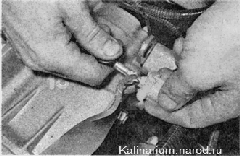
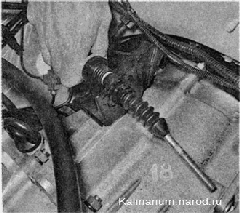
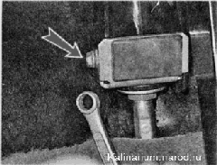
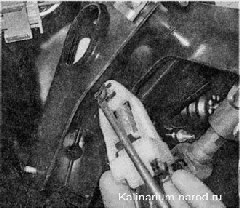
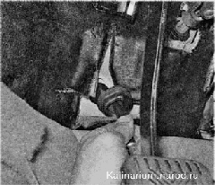

Трос сцепления заменаТрос заменяем при его обрыве, заедании в оболочке или чрезмерном вытягивании, а также при неисправности механизма регулировки длины троса. Снятие 1. Снимаем воздушный фильтр. 2. Потянув за наконечник троса, выводим его поводок из зацепления с рычагом вилки выключения сцепления. 3. Отворачиваем поводок по резьбе наконечника троса и снимаем поводок. 4. Извлекаем нижний наконечник оболочки троса из кронштейна, установленного на картере коробки передач.  5. В салоне, под панелью приборов, ключом на 8 мм отворачиваем гайку крепления кронштейна оболочки троса к кронштейну педали сцепления. 6. Поддев отверткой, снимаем пружинную фиксирующую скобу поводка наконечника троса. 7. Снимаем поводок с пальца рычага педали сцепления. На пальце педали сцепления осталась пластмассовая втулка, не потеряйте ее. Поврежденную втулку следует заменить. 8. Извлекаем резиновый чехол из отверстия перегородки моторного отсека, вытягиваем трос из моторного отсека и снимаем его. Установка 1. Покрываем палец и втулку пальца педали сцепления пластичной смазкой (Литол-24). 2. Протягиваем трос через отверстие в перегородке моторного отсека из салона в подкапотное пространство. 3. Заправляем резиновый чехол оболочки троса в отверстие перегородки моторного отсека. 4. Надеваем поводок зубчатого наконечника троса на палец педали сцепления и крепим его фиксирующей скобой. 5. Крепим гайкой кронштейн оболочки троса к кронштейну педали сцепления. 6. В моторном отсеке вставляем нижний наконечник оболочки троса в отверстие кронштейна коробки передач. 7. Наворачиваем поводок на резьбовой наконечника троса, обеспечив выступание наконечника из поводка в переделах одного витка резьбы. 8. Регулируем привод выключения сцепления , после чего несколько раз нажимаем педаль сцепления и повторяем регулировку. 9. Пластичной смазкой (Литол-24) покрываем рабочую поверхность поводка резьбового наконечника троса. 10. Убеждаемся в исправной работе сцепления. |